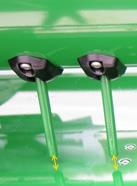
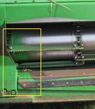
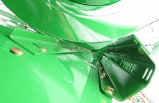
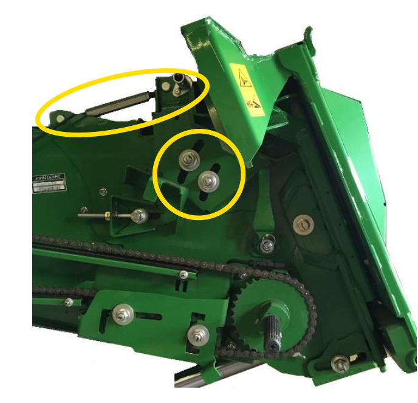

Configuration de la plateforme
Il est primordial de suivre la procédure suivante afin de garantir un configuration optimale de voitre plateforme :
Réglez la vis d’alimentation et le doigt de vis sans fin pour la récolte de graminées.
Vérifiez la distance entre la vis d’entrée et les racleurs.
Réglez les racleurs selon les indications des DTAC 76721 (600R) et des DTAC 104058 (700X).

Angle du convoyeur d’alimentation
L'angle du convoyeur d'alimentation doit être réglé à plat ou légèrement incliné vers l’avant afin de permettre le ramassage de la récolte sans pousser de terre.
Vous pouvez ajuster l'angle à l'aide de la barre filetée.

Note: Consultez le livret d’entretien pour modifier le réglage d’autres unités.
Longueur de table (700X)
La longueur de table de la 700X doit être réglée en fonction de la hauteur de la culture et de la hauteur des chaumes.
Les épis doivent tomber entre les spires de la vis d’alimentation.